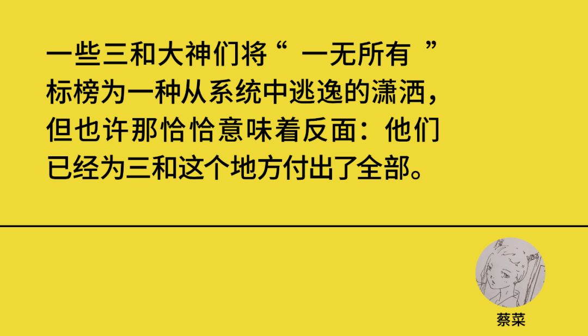

疫情下的深呼吸 | 这疫情，可得赶快过去
原文链接 备份链接 这疫情，可得赶快过去 口述者：小梅（化名）/河南信阳籍 打工所在地：北京 编者注：小梅，女，44周岁，中专毕业，河南籍在京务工人员，患有高血压、糖尿病。丈夫做外墙保洁，也兼做临时工，患有腰间盘突出。小梅在一所民办打 …
Original BIE别的 BIE别的
BIE别的 
Today


三和应有尽有：这里的地标建筑是一片被称为 “海信大酒店” 的室外露营地；纪念品是挂逼面、清蓝水、老太太经典挂逼衣等超低消商品；文化输出是 “一句话形容三和精神” 帖子下亢奋、押韵的老哥语录，本地名人是一串街头巷尾广为传诵的名字：二百舞、红姐、宋春生；地方志是虽署着这些名字，但却在口耳相传中自行繁衍的都市传说。
三和应有尽有，只不过一切都以别样的面目显示出来。
庇护所打烊了

在深圳龙华区东环一路，坐落着四层高的三和人力资源集团。这是“三和” 两个字发源的地方，被老哥们称呼为 ”基地“，但这里绝不能代表三和。打工半年的吴正告诉我，三和是一片区域，没有明显的边界，只要看见很多蓬头垢面、衣衫褴褛的人睡在大街上，就说明你已经到了，打工五年的王全说，三和指的不是地方，而是人。
王全和吴正都是湖北人，吴正过年回家，困在湖北恩施老家。王全年前短暂离开三和去龙华其他地方找日结，后来新冠肺炎爆发，沿途乡镇自行封路，像大多数 “大神” 一样，王全没有身份证，无法通过，就这么在街头晃荡了一个多月。
但王全知道，即便当时不主动离开三和，也会被迅速抖落出去。自从一月底，三和人力市场关停、打工者必须更依赖于网上良莠不齐的个人中介开始，三和便逐渐失去了集合 ”大神“ 们的磁力。之后，公园、路口、”海信大酒店“ 附近，”有人巡逻、测体温”、不允许打地铺；出入证办理收紧，”有些地方要去年在三和租过房子才可以进“；网吧关停，大神们再找不到十块钱就能刷夜的庇护所。


三和人力市场附近冷清了许多 图片来源：百度贴吧 @酒易冷
王全告诉我，跟三和人力市场一起被围起来的，还有平时给三和老哥们存取行李的底商，“老哥年后回来，隔着栅栏，没法提走年前存的行李”，王全估计，困住的行李至少有三千件。

一位老哥说，自己的行李就存在这个寄存点，但自己进不去 图片来源：百度贴吧 @酒易冷
这一个多月来，三和大神们在龙华区四处分散开来。由于日租房、旅馆拒收湖北人，王全 “有时候睡到别人装修的房子里，有时候睡桥洞，有时候睡公共厕所、公园”，过了一个多月，白色的短袖被穿成了黑色。

王全回忆，直到 2 月 26 日，中介才开始招湖北人 —— 原话是 “可以收留”，但都是工资比较低的，他决定再等等。
三和大神永不为奴
“有些大神，即便饿死也不会去工厂，特别有骨气”，王全说，这绝不只是一句狠话，三和一直有这种事发生 —— “真的，那么躺着躺着，就饿死了”。
在大神眼里，进厂是一种耻辱，即便进了，“火箭线、猪食、管理严、工资低、猪圈、上班时间长，也要分分钟提桶跑路” ，并且，大神绝不会因此而感到丝毫羞愧。
三和人民共享着一个坚定又栩栩如生的想象 —— “黑厂就是那种压榨人的资本家开的”，我问王全，有没有不黑的厂，他告诉我，没有，“只要是工厂，就一定黑”。大神们将 “去工厂上班” 笑称为 “战黑厂”，这时，偷懒被升华为面对 ”资本家“ 时一种唯一有效的自卫方式。
像大多数大神一样，王全家里并不富裕，外出打工的爸爸是家里唯一的收入来源。“以前还觉得干活有点劲头，现在感觉钱都是利生利，累积出来的，在黑厂打工一辈子也挣不了什么钱。” 在三和，没有人相信阶级跃升的神话，成功学被大规模嘲讽，财富分配在他们到来之前便已经完成。绝望、徒劳的情绪在蔓延，大神们重复着 “天为被、地为床，精神已升天” 这样的顺口溜，一边取笑着自身的境遇，一边生生地用世外高人式的姿态为这种境遇追加意义。
 俩字，心态！
俩字，心态！
可骨气并不能帮王全度过眼下的难关，几天过去，王全有意去包吃包住的工厂了，“就是没有身份证，去不了正规的”。在龙华，王全做了几天分拣快递的日结工作，一小时 11 块，一天挣的钱除了吃饭，睡一晚上单间就没了，“不能睡，睡了白干了。”
走投无路时，王全会在贴吧上发起众筹，他说这叫 “团饭”。有个老哥心眼好，看到帖子，借了他一百，王全说他天天睡公园，也要还给老哥，“坑工厂可以，但绝对不能坑老哥” —— 这是三和的道德准则。
另一边，年后刚加入打工队伍的齐昊，身份证尚在，成功进了富士康。疫情最严重的时期过去，工厂需求量更大了，为吸引打工者，富士康设立了奖励金机制，“我就是冲着这个钱去的，第二个月发四千多，第三个月发完剩下的两千多”。齐昊告诉我，在富士康，轻松的活轻松死，累的活累死，被分到哪个，都得看命。“我运气好，负责把一个工件放进一个自动化的机器里边，等十几分钟，再把它拿出来，特轻松。”
可齐昊只坚持了两个小时就跑路了，原因是 “要穿无尘衣戴帽子，只露眼睛，憋得慌” —— 前几天，王全也以同样的理由扔掉了自己的口罩。前脚走出富士康，齐昊就在网上评论 “垃圾厂，包瘫痪的”，但过一会，他又告诉我，“有点后悔了”。
乐土的意思是 “量身定做”
齐昊属于 “曾经几百万身家，现在瘫痪如狗” 的那种，“别看三和大神现在这样，里边藏龙卧虎，好多以前牛逼的。”我问齐昊他以前到底有多牛逼，齐昊想了一会说：“一个帅字贯穿了我的一生。”
“我十三出来闯社会，十三岁就一米七了，吃喝嫖赌抽，坑蒙拐骗偷，什么都会，稳得一批。动不动就去澳门玩，澳门美高梅、永利皇宫，好几家赌场，我都是黑卡的。如果你想去玩，我直接让公关给你开房，都是免费的，稳得一批，反正我没钱玩了，现在输到瘫痪，天天混吃等死。”
“这是大神身份的象征，没输个二十个，哪来的这卡？”
“稳得一批” 是齐昊的口头禅，说完一段话，他喜欢反问别人 “稳不稳？”，然后等别人再用 “稳得一批” 来回答他。齐昊说，”稳得一批“ 是大神们追求的一种最舒服的状态，我问他那是什么状态，他又用另一句当地俚语回答我：“就是精神美滋滋，明白不？”
刚来这边，齐昊印象最深刻的是路边售卖的三和经典款老太婆挂逼衣，“十块到五十块之间，还有名牌，都是别人扔掉的衣服，那些老太太收回来洗一下，放在那里卖。” 见识得多了，齐昊发现，在三和怎么都能活下去，即使没钱了，也总能发现身上有可以立即兑现的东西，这种诱惑悬在每一个大神头上。“一方面，觉得这个地方能收留自己，另一方面，发现三和就跟赌场一样，不知不觉地，就能让你一无所有了。”
就像不能回答先有鸡还是先有蛋这个问题一样，没有人能回答是先有了三和还是先有了三和大神。没钱时，一元一瓶的清蓝水、四元一碗的挂逼面，一块五一个小时的网吧，几十元卖掉自己的身份证件；有钱时，十五元一份的猪脚饭，五十元一晚带淋浴的 “挂逼单间”，去景乐市场旁边的影城看电影，用一百块钱买一张跟自己长得最像的身份证。
就像 “戒赌吧” 是赌场广告大型集散地的别名，即便三和到处张贴着像 “卖出一张身份证，买入一条不归途”、“锄禾日当午，实干才靠谱” 这样的标语，但就像齐昊说的，“这个地方其实充满了怂恿和诱惑”。三和随时为大神们奉上无数退路，反过来，大神们也在向网游奉上工资，向中介奉上回扣，向数不清的网贷奉上高昂的利息，向百家乐奉上风险投资 —— 老哥们把跟黑厂的斗争挂在嘴边，却对另一种形式且精准得多的收割甘之如饴，一些三和大神们将 “一无所有” 标榜为一种从系统中逃逸的潇洒，但也许那恰恰意味着反面：他们已经为三和这个地方付出了全部。
去富士康是齐昊第一次进厂，跑出来后，又找了一个 “一小时二十，一天干十个小时” 的日结，虽然刚刚上道，但齐昊说自己对三和有着非同一般的领悟，“反正就是，既不会让你死，也不会让你活得好，既不会让你心甘情愿地留下来，也不会让你横下心离开” —— 三和大神把这种欲罢不能称为 “生活就是这样”。
都是修炼
王全的打工之路没这么多戏剧性，也没什么工夫反思，成年后，他就独自离家打工，他用 “修炼” 形容自己曾经 “做一天玩三天” 的生活，然后发现 “现在没有什么放不下的了” 既是成果，也是副作用：“没有目标了，也不知道以后干嘛”。吴正在解释自己来三和的原因时，也提到 “修炼” 二字，那是为了 “忘记自己的初恋”。
吴正是大半年前来到三和的，原因是 ”自己高考失利，女友去了武汉读专科，跟一个深圳富二代跑了”。之前，吴正也在深圳其他地方干过，“到处楼都很高，让人恐惧”，只有在三和，他才找到了 “短暂的宁静”。吴正最欣赏三和大神们 “不信女人，不近女色”，“大神们有一点钱就去上网，会自己享受，不像我，高中时候，女朋友想要个手机，我把所有的钱都给她凑份子了，想想当时真是太傻了。”
来三和的时候，吴正只有 19 岁，不喜欢去厂里上班，专门挑一些 “帮人搬家具、装卸货物、拆家装修、清理建筑垃圾、扫下水道” 这样 “不是特别累的体力活”，三点一线地穿梭于日结、网吧和床位之间。
吴正觉得自己跟其他三和人不太一样。比如，大神一般在网吧玩吃鸡、LOL、CF、传奇等网游，吴正爱写小说，在三和的网吧里熬夜敲出一部名叫 《不败辉煌》 的三十万字长篇，讲的是出生贫苦的男主角陆源，在校园里 ”泡妞、打架、追班花“ 的成长故事，女主角之一是一个成绩中游、古灵精怪的女孩，名叫画琳，QQ 昵称叫 “琳琳如画”。吴正向我保证，这么好听的名字完全是他的原创，”世界上所有的女性，没有谁是叫这个名字的。”

“《不败辉煌》是签了约的，随便都能搜到”
写累了，吴正会在网吧听听歌、看看韩剧，他最喜欢《城市猎人》和《继承者们》，看了一遍又一遍，他羡慕韩剧里的爱情，因为 “永远不用担心吃饭的问题”；另外，别的大神不爱攒钱，吴正半年多来攒下了一万多元。
年前，吴正回到湖北老家，因为疫情，一直没有回三和打工。躺了一个多月后，他决定，不回去了，当时去三和是为了忘记女友，现在见了世面，发现 “她其实长得也就那样”。吴正想参加明年的高考，为了获得报考资格，他花了两千多元买了一张中专毕业证，“相当于在别处挂了一年的学籍，是真的，可以查到。”
吴正长得很帅，至今，他的一张照片还在贴吧里流传，但他准备 “这辈子独善其身”。“老家的彩礼涨到了三十六万，还要有不低于十五万的车子和八十平起步的房子。” 我对这个数目表示质疑，吴正告诉我，越穷的地方彩礼越刁，他们那里的男女比例是五比一。
我问吴正，在三和的时候就没有喜欢的女孩吗，他告诉我，三和大神都没有女朋友，就连那几个在三和大神中间口耳相传的从事性服务的女孩，都是假的。关于三和的传闻，唯一百分百真实的，是新乐北街双丰面馆四元一碗的挂逼面，“原来掌柜的老头回了老家，面馆由女婿接班，是三和著名家族企业。”
同一时间，齐昊在离开富士康后，又做起了有一天没一天的日结，每天都在后悔 “要是不赌的话，手里有千把万的”，他觉得自己的心态不够好，不配做大神。“现在负债二十个，花呗马上就逾期，网商贷还有七万。” 过了几天，我问他还在打工吗，他没说话，只回复了一个提桶跑路的表情。

这个表情
至于王全，他找到了一家不用身份证就能进的工厂，找老哥又团了两百多元，用来买进厂用的杯子、衣服和体检的费用。他后来告诉我，其实，自己不想进工厂，最大的原因是 “衣服太脏了，没钱买自带的被子，担心和别人住在一起会遭到笑话”。他决定明天就去报道，他觉得这是现在最好的选择。
// 作者：蔡菜
// 编辑：陆冉
// 设计：冬甩


原文链接 备份链接 这疫情，可得赶快过去 口述者：小梅（化名）/河南信阳籍 打工所在地：北京 编者注：小梅，女，44周岁，中专毕业，河南籍在京务工人员，患有高血压、糖尿病。丈夫做外墙保洁，也兼做临时工，患有腰间盘突出。小梅在一所民办打 …
原文链接 备份链接 为了尽快回到正常轨道，富士康在过去两周祭出了招工史上最贵的入职奖金，深圳工人响应踊跃，3.7万人报名，最后进入富士康工作的人不到1万 图/视觉中国 文 |《财经》记者 王凤 周源 编辑 | 谢丽容 过去两周，全球最大代 …
原文链接 备份链接 以下文章来源于财经十一人 ，作者王凤 [财经十一人 由《财经》杂志公司产业报道团队创建，研讨企业成败，探究行业兴衰，推动阳光商业](#) 库克在公开信中引用了林肯的话说：“困难重重，我们必须与时俱进。因为我们面临的问题 …
原文链接 备份链接 不上班就得吃老本，我们没钱吃啥老本 口述者：刘兴（化名） 打工所在地：北京 编者注：刘兴，51岁，1988年从内蒙农村来京打工，右眼失明，左眼白内障，因手术风险较大无法做手术。现在做车管员工作。妻子36岁，智力二级残 …
原文链接 备份链接 本报记者 陈佳岚 陈溢波 李正豪 北京 广州报道 每年春节过后，都是刘伟（化名）最繁忙的时候。 3月4日下午，熟悉富士康劳务供应的刘伟告诉《中国经营报》记者，“郑州富士康目前在厂员工大约7万人，每天大约招募5000 …